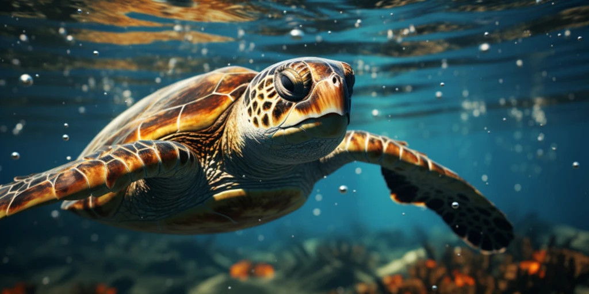

Wildlife conservation involves the protection and management of wild species and their habitats. This section begins with a detailed explanation of the definition and scope of wildlife conservation. It explores the major threats to wildlife, including habitat loss, poaching and illegal trade, climate change, and pollution.
Various conservation strategies are discussed, such as the creation of protected areas and wildlife sanctuaries, the establishment of wildlife corridors, and the implementation of anti-poaching measures. The importance of community involvement and sustainable practices is also highlighted.
Success stories are shared to illustrate effective conservation programs and the recovery of certain species from the brink of extinction.
Endangered Species Conservation
Marine wildlife conservation addresses the protection of species living in oceans and other marine environments. This section starts with an overview of the importance of marine ecosystems and the unique challenges faced by marine wildlife. It examines threats such as overfishing, habitat destruction, pollution, and climate change, which have significant impacts on marine species.
Conservation strategies discussed include the establishment of marine protected areas, sustainable fishing practices, and efforts to reduce marine pollution. The role of international collaborations and agreements in marine conservation is also highlighted.
Success stories of marine species recovery and ongoing conservation projects are presented to demonstrate the effectiveness of these efforts.
Marine Wildlife Conservation

Marine wildlife conservation addresses the protection of species living in oceans and other marine environments. This section starts with an overview of the importance of marine ecosystems and the unique challenges faced by marine wildlife. It examines threats such as overfishing, habitat destruction, pollution, and climate change, which have significant impacts on marine species.
Conservation strategies discussed include the establishment of marine protected areas, sustainable fishing practices, and efforts to reduce marine pollution. The role of international collaborations and agreements in marine conservation is also highlighted. These strategies aim to mitigate the adverse effects on marine biodiversity and ensure the health and sustainability of oceanic ecosystems.
Success stories of marine species recovery and ongoing conservation projects are presented to demonstrate the effectiveness of these efforts. These examples showcase how targeted conservation initiatives can lead to significant improvements in the population and health of marine species, providing hope and motivation for continued conservation work.